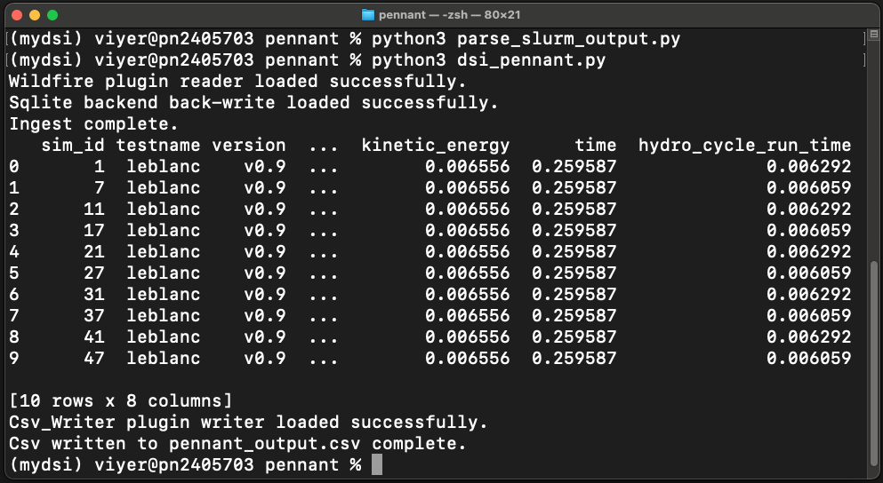

DSI Examples
PENNANT mini-app
`PENNANT`_ is an unstructured mesh physics mini-application developed at Los Alamos National Laboratory for advanced architecture research. It contains mesh data structures and a few physics algorithms from radiation hydrodynamics and serves as an example of typical memory access patterns for an HPC simulation code.
This DSI PENNANT example is used to show a common use case: create and query a set of metadata derived from an ensemble of simulation runs. The example GitHub directory includes 10 PENNANT runs using the PENNANT Leblanc test problem.
In the first step, a python script is used to parse the slurm output files and create a CSV (comma separated value) file with the output metadata.
python3 parse_slurm_output.py
In the second step, another python script,
python3 dsi_pennant.py
reads in the CSV file and creates a database:
#!/usr/bin/env python3
"""
This script reads in the csv file created from parse_slurm_output.py.
Then it creates a DSI db from the csv file and performs a query.
"""
import os
from dsi.dsi import DSI
if __name__ == "__main__":
test_name = "leblanc"
table_name = "rundata"
csvpath = f'pennant_{test_name}.csv'
dbpath = f'pennant_{test_name}.db'
datacard = "pennant_oceans11.yml"
output_csv = "pennant_output.csv"
dsi = DSI()
dsi.read(csvpath, "Wildfire", table_name=table_name)
dsi.read(datacard, "Oceans11Datacard")
if os.path.exists(dbpath):
os.remove(dbpath)
dsi.backend(dbpath, 'Sqlite')
dsi.ingest()
dsi.query(f"SELECT * FROM {table_name} WHERE hydro_cycle_run_time > 0.006;")
dsi.write(output_csv, "Csv_Writer", table_name=table_name)
Resulting in the output of the query:

The output of the PENNANT example.
Wildfire Dataset
This example highlights the use of the DSI framework with QUIC-Fire simulation data and resulting images. QUIC-Fire is a fire-atmosphere modeling framework for prescribed fire burn analysis. It is light-weight (able to run on a laptop), allowing scientists to generate ensembles of thousands of simulations in weeks. This QUIC-fire dataset is an ensemble of prescribed fire burns for the Wawona region of Yosemite National Park.
The original file, wildfire.csv, lists 1889 runs of a wildfire simulation. Each row is a unique run with input and output values and associated image url. The columns list the various parameters of interest. The input columns are: wild_speed, wdir (wind direction), smois (surface moisture), fuels, ignition, safe_unsafe_ignition_pattern, safe_unsafe_fire_behavior, does_fire_meet_objectives, and rationale_if_unsafe. The output of the simulation (and post-processing steps) include the burned_area and the url to the wildfire images stored on the San Diego Super Computer.
All paths in this example are defined from the main dsi repository folder, assumed to be ~/<path-to-dsi-directory>/dsi.
To run this example, load dsi and run:
python3 examples/wildfire/wildfire.py
import os
from dsi.dsi import DSI
isVerbose = True
if __name__ == "__main__":
input_csv = "wildfiredataSmall.csv"
db_name = 'wildfire.db'
output_csv = "wildfire_output.csv"
datacard = "wildfire_oceans11.yml"
table_name = "wfdata"
columns_to_keep = ["wind_speed", "wdir", "smois", "burned_area", "FILE"]
dsi = DSI()
dsi.read(input_csv, "Wildfire", table_name=table_name)
dsi.read(datacard, "Oceans11Datacard")
dsi.write(output_csv, "Csv_Writer", table_name=table_name)
if os.path.exists(db_name):
os.remove(db_name)
dsi.backend(db_name, backend_name="Sqlite")
dsi.ingest()
dsi.display(table_name, display_cols=columns_to_keep)